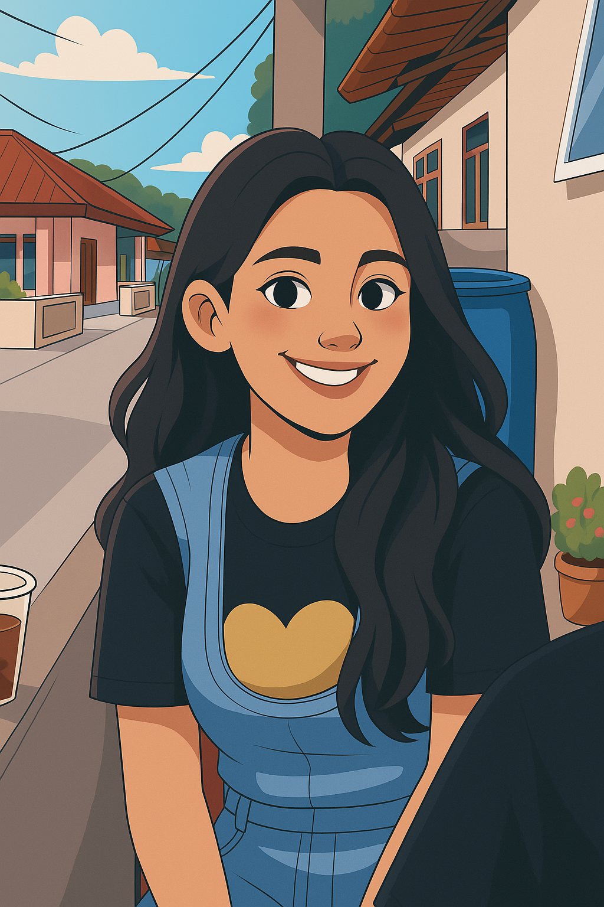
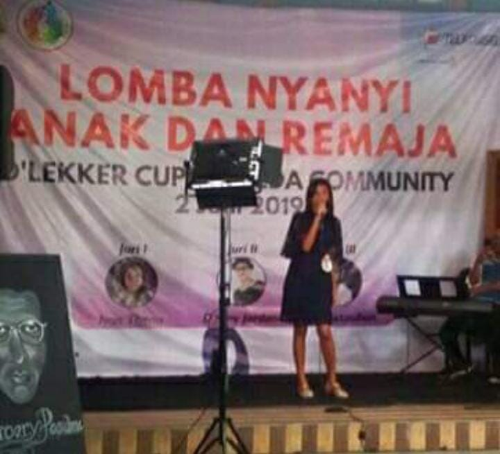
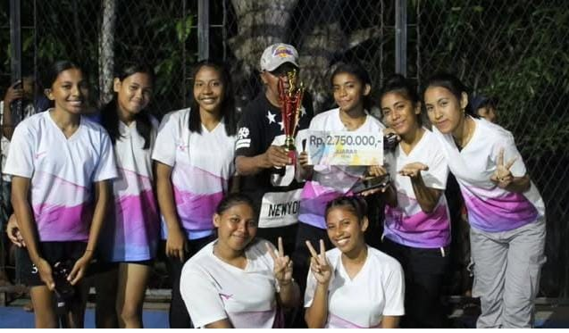
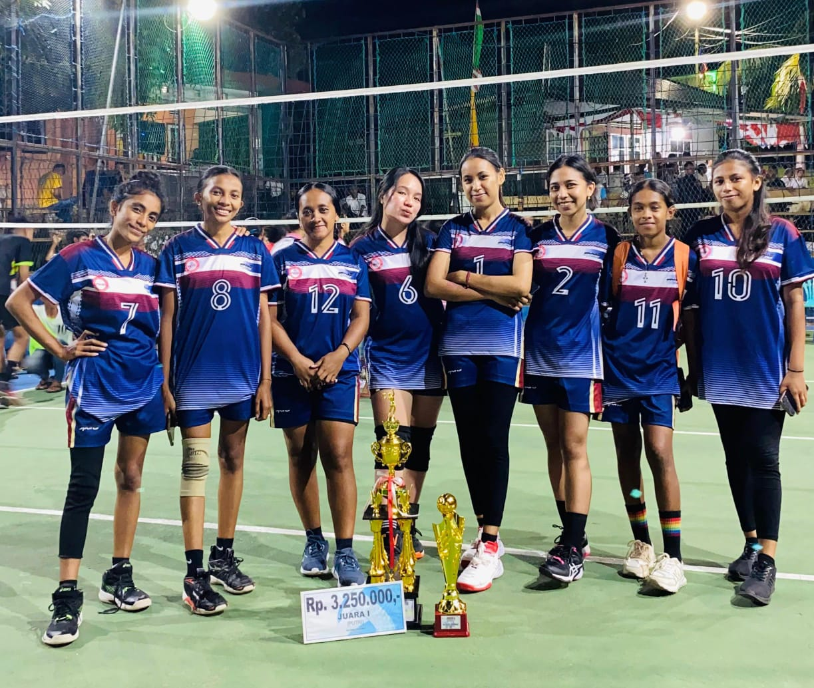

Fakultas Ilmu Komputer, Jurusan Informatika.
Saat ini sedang menempuh Semester 4.

Veronika Valensya Futwembun
Mahasiswa Informatika
UNIVERSITAS KRISTEN INDONESIA MALUKU
Biodata
Halo! Nama saya Veronika Valensya Futwembun, lahir di Ambon pada 28 Juli 2004.
Saya adalah mahasiswa Informatika di Universitas Kristen Indonesia Maluku. Saya selalu berusaha untuk belajar hal-hal baru dan mengembangkan keterampilan saya di dunia IT yang terus berkembang.
Sebagai anak keempat dari lima bersaudara, saya tumbuh dalam keluarga yang sederhana, namun penuh cinta kasih Tuhan Yesus. Sejak kecil, saya banyak menghabiskan waktu bersama oma dan opa, karena mama harus berjuang mencari nafkah setelah papa pergi dan tidak kembali. Pengalaman ini membentuk saya menjadi pribadi yang mandiri dan menghargai setiap perjuangan.
RIWAYAT PENDIDIKAN
2023 - Sekarang
2019 - 2022
2016 - 2019
2010 - 2016
HOBI & MINAT
- Membaca Buku
- Mendengarkan Musik
- Menjelajah Internet
- Belajar Hal Baru (khususnya di bidang teknologi)
- Fotografi (sederhana)
- Olahraga (Bola Voly)
- Menyanyi
ACHIEVEMENT

Juara 3 Lomba Nyanyi Kategori Remaja D'Lekker Cup 2019

Juara 2 Lomba Volly Hutumuri Cup 2023

Juara 1 Lomba Volly Hutumuri Cup 2024
CONTACT
Created by Veronika V Futwembun